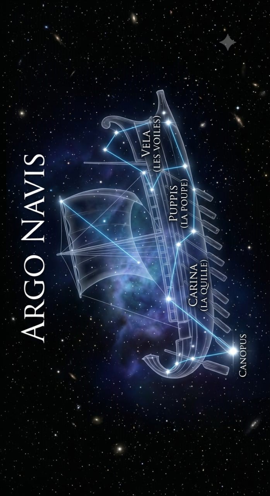

Les dieux m'ont utilisé puis abandonné à mon sort.
On m'appelait Argus. Le vigilant, le veilleur. Celui qui ne dort jamais.
Cent yeux. Cent fenêtres ouvertes sur le monde. Quand l'un de fermait, les autres veillaient. Toujours.
Je ne connaissais pas le repos et rien n'échappait à mon regard.
Servir Héra étaitnun honneur, ou du moins c'est ce que je croyais.
Héra m'avait confié une tâche. Surveiller une énième conquête de son époux infidèle.
Ce n'était pas une menace,encore moins un monstre, ni un ennemi. Il s'agissait d'une innocente. Une victime de plus dans la folie des dieux.
Je l'ai vue. Je la voyais tout le temps.
Je voyais son corps qui n'était plus vraiment le sien. Je voyais ses yeux humains prisonniers d'un forme qui ne pouvait plus parler. Je voyais ses tentatives et ses espoirs absurdes de se soustraire à ma garde.
Je voyais ses larmes tomber dans la poussière.
Et elle savait que je la voyais. C'était ça le pire. Il lui arrivait de me regarder. Pas comme son geôlier. Comme sa seule chance de s'en sortir.
Je n'ai rien fait. J'étais peut-être son geôlier mais en ce moment-là j'étais prisonnier de ma loyauté. Mais les dieux ne récompensent pas la loyauté, ils l'exploitent.
Hermès est venu à moi, avec des mots doux et une musique encore plus douce. Une mélodie si…parfaite qu'un de mes yeux s'est fermé. Puis deux,puis dix.
Pour la première fois de mon existence, je ne voyais plus. Et dans cet instant tout m'a été repris. Je n'ai pas compris ce qui m'est arrivé, mais c'est comme ça que je suis mort. Je suis mort en faisant confiance, et pour un être doté de cent yeux, je me suis laissé aveugler par la confiance que j'avais dévoué aux dieux.
Mes yeux ont été arrachés puis exposés comme des trophées sur les plumes d'une créature que je ne connaissais pas.
Un paon. L'image de la beauté construit sur un massacre.
Malgré cela, je vois encore, plus comme avant. Pas avec mes yeux, mais quelque chose de plus vaste.
Dans le ciel austral, là où les dieux ne regardent presque jamais, je suis devenu autre chose.
Pavo.
L'Argo Navis d'origine représentait le navire légendaire qui transporta Jason et les Argonautes à la recherche de la Toison d'or. Parce qu'il était trop massif pour être facilement utilisé par les astronomes modernes, l'Union astronomique internationale :
Carina (La Quille)
Puppis (Le Pont de la Poupe)
Vela (Les Voiles)